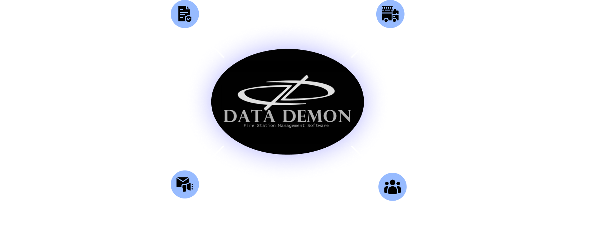
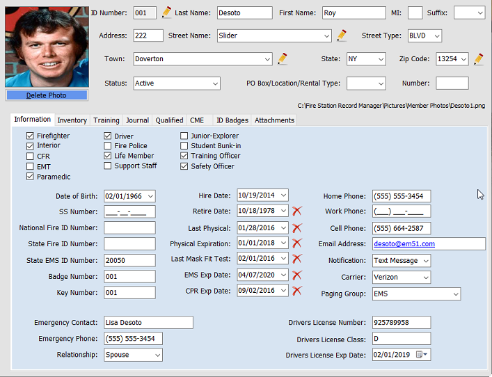
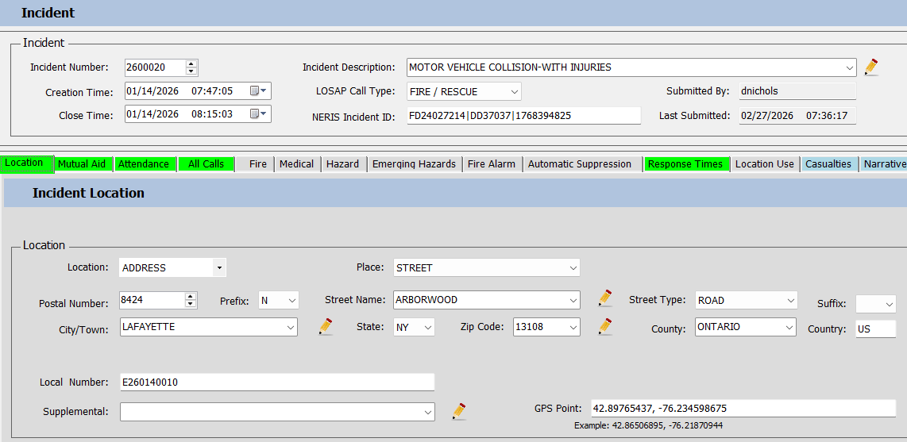

Features
We do it all, fast and easy.

Membership
Personnel information, training records, and inventory are entered and edited at your command.
- CPR and EMS expiration dates
- Mask fitness test dates
- Yearly physicals
- Driver's license ID numbers
- Cancer bill
- Emergency contact information
- Education
All available for review and print out for insurance requirements. Photo ID badges and accountability tags can also be printed for each member.


Attendance
A comprehensive tally of all Fire/EMS calls, drills, meetings, training and miscellaneous functions that can be customized to your fire department preference.
- Mandatory 8 hour minimum yearly safety training records kept for each individual.
- Report can be provided and printed out for the department as a whole or individualized for a total of all calls credited for and attended.
Fire Reporting
Now accomplished through easy to use pre-formatted forms.
- Progressive questions ensure that only required data fields are populated.
- Incidents can be imported through their county 911 CAD system.
- Easy to use NERIS compliant software with comprehensive error checking, ensure accurate data entry.
As incidents are completed, they are sent directly to NERIS.


Equipment Inventory and Maintenance
All fire department equipment and firefighter personnel provided equipment can now be accounted for and tallied with detailed reports. Yearly equipment accountability and fire department auditing now becomes much easier.
- Track monthly inspections, annual maintenance or repairs done in house or by outside vendors, including any cost involved.
- Recorded and used to generate maintenance and financial reports.
Like what you see?
Get StartedHave questions?
Contact Us